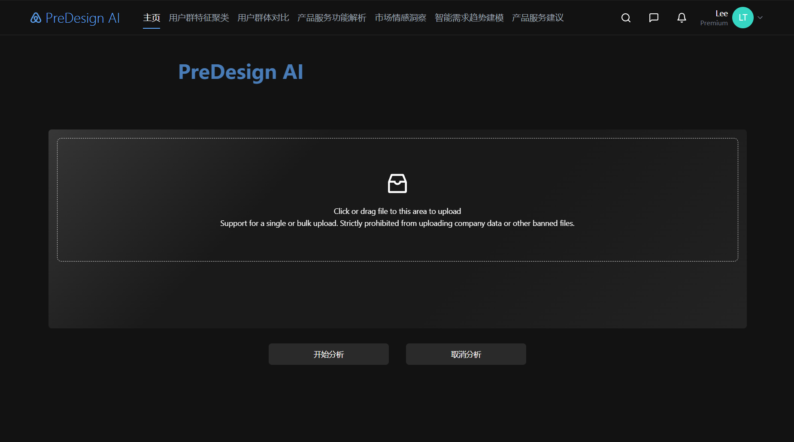
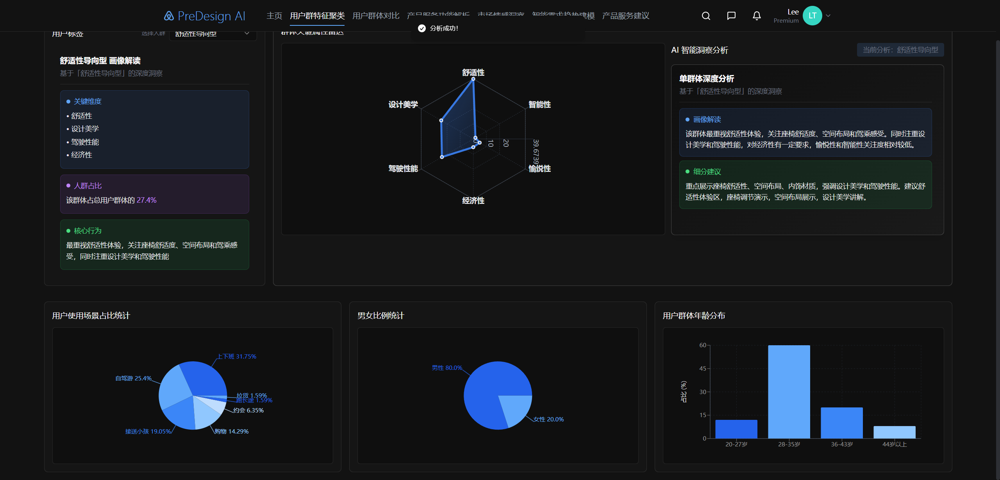
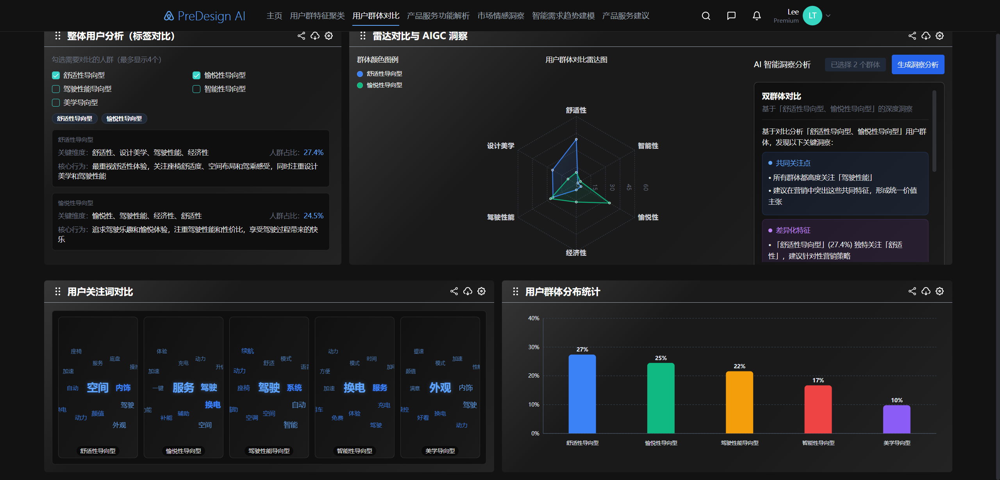
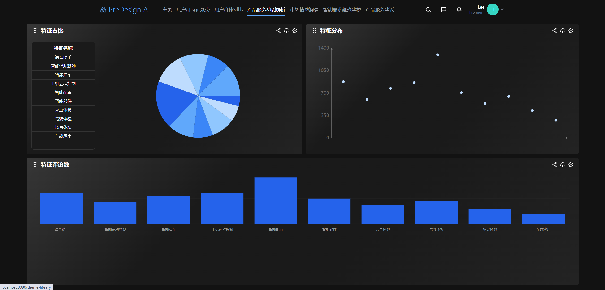
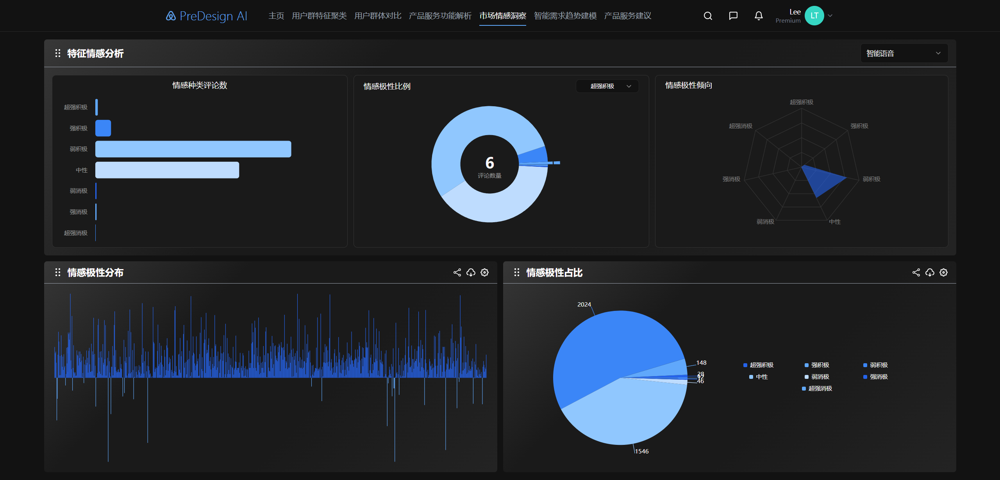
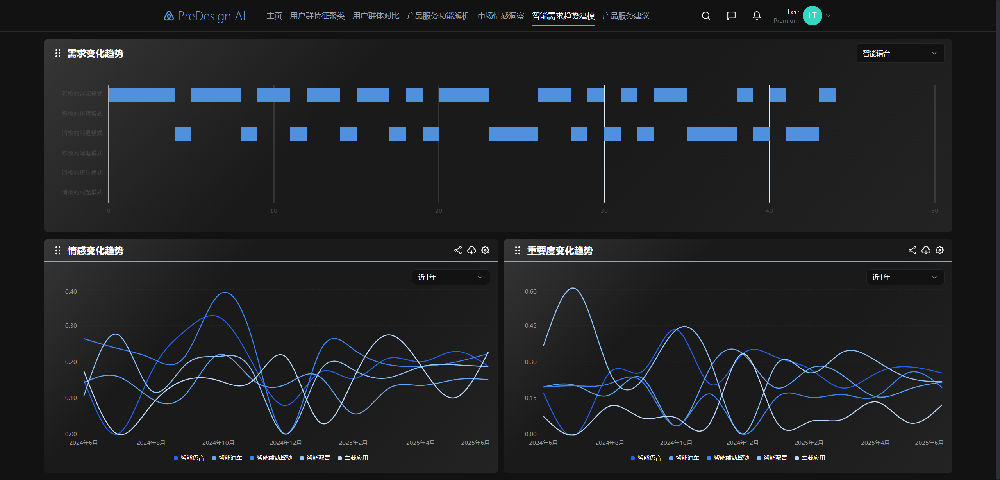

1. 项目入口与整体框架
这一页展示系统的整体入口与核心模块分布。设计重点是让用户先快速理解系统能力， 再通过清晰的主导航把调研、分析、归档和输出几个关键流程自然串联起来。
围绕用户调研、需求整理、任务流梳理与界面呈现的完整案例展示
这个系统以用户需求的采集、分析、归类和展示为核心，目标是帮助团队更高效地理解用户痛点， 将零散反馈转化为可执行的设计依据，并通过清晰的信息结构支持后续产品决策。

这一页展示系统的整体入口与核心模块分布。设计重点是让用户先快速理解系统能力， 再通过清晰的主导航把调研、分析、归档和输出几个关键流程自然串联起来。

这一部分聚焦需求录入与信息收集。界面通过表单分组、字段层级和状态提示， 帮助研究者系统记录用户背景、使用场景和具体问题，提升信息完整度与可追溯性。

这里展示的是需求聚类和优先级整理逻辑。通过标签、分层结构和视觉权重区分不同类型的需求， 让团队能更快识别高频痛点、核心任务和潜在机会点。

这一页重点在于把复杂的研究结果转化为更易读的可视信息。通过图表、指标和模块化内容布局， 用户可以快速看出问题分布、需求集中点以及不同群体之间的差异。

这一部分强调用户在系统中的连续操作体验，例如筛选、检索、查看详情和导出结果等高频行为。 设计上尽量减少跳转负担，通过一致的反馈与路径组织让分析流程更顺畅。

最后一页对应项目成果总结。它强调这套系统不仅能帮助团队沉淀用户研究内容， 还能够把需求洞察转化为清晰、可共享、可追踪的设计资产，提升需求管理和产品迭代效率。